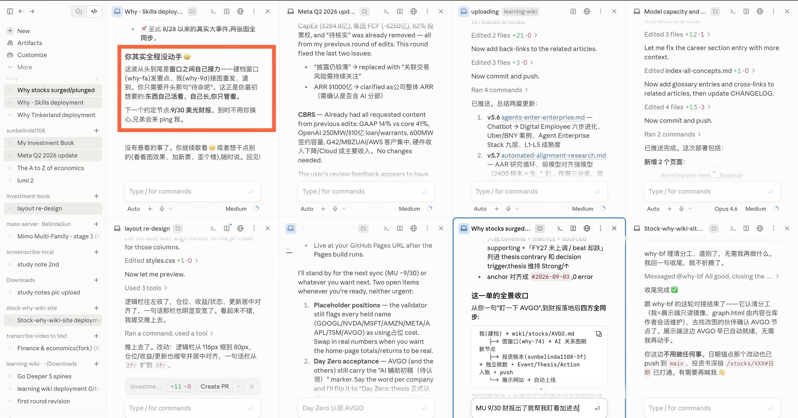

Before I retired, I had it all planned out.
I was going to read books, binge-watch shows, learn music, chess, calligraphy, and painting, and travel the world. I also imagined spending half of every year living somewhere warm and pleasant — Thailand, perhaps, or somewhere in Yunnan where it feels like spring all year round.
Not traveling as a tourist, but actually living there.
I'd wake up naturally every morning, wander through the local market, grab whatever looked good for breakfast, pick up some fresh fruit and vegetables, and never bother cooking lunch or dinner because I'd be surrounded by authentic local food anyway. Thai and Yunnan cuisine happen to be two of my favorites.
No worries. No schedules. Just a wonderfully leisurely little life.
It sounded perfect.
And now, six months into retirement, let's see how that plan is going.
These days, I'm either chatting with Jupiter, building something with Claude, bossing Claude Code around, or occasionally putting Codex to work.
The only times I'm reliably away from the computer are when I go outside for some sunshine, walk to the supermarket for fruit, take a stroll in the park (Figure 1), or lie in bed at night watching short videos.
I waited for Elon Musk's driverless car.
Instead, I got a driverless computer.
Anyone who has used "computer use" will understand why people sometimes compare it to self-driving cars for AI. The analogy feels increasingly accurate. Now it can even work away quietly in the background without hijacking your mouse or keyboard, while you carry on chatting, writing a blog post, watching a show, or doing something else entirely.
This morning, once again, I didn't wake up until after ten.
I got up and promptly put eight windows to work at the same time.
Not that I had eight terribly important things that needed doing. 😂
But watching eight Claude brothers busily working away — communicating with one another, coordinating tasks, taking initiative, being conscientious and responsible, and remaining unfailingly polite throughout — gave me a feeling that is surprisingly difficult to put into words.
Excitement. Satisfaction.
And, more than anything, the unmistakable feeling that the future has already arrived.
For more than half a year now, almost every day has brought something new. One company releases a new model. Another adds a new capability. Someone breaks through another technical bottleneck. Everyone is racing everyone else, and the whole field seems to be moving at an absurd speed.
Every day, I get to watch these AI giants battle it out — while commanding my own little army of AI agents.
I feel extraordinarily lucky. And grateful.
Apparently, though, my impression that I was "busy managing eight windows at once" was somewhat exaggerated.
Claude exposed me. 🤭
As it pointed out in Figure 2:
"You actually didn't do anything the whole time. The windows were just handing things off to one another."

In other words: Just tell us what you want done. We're standing by. Point us in a direction, and off we go.
Codex, in fact, is even more explicitly designed for this kind of work. Its desktop app is positioned as a "command center for agents": multiple agents can work in parallel, with separate tasks organized into different threads and projects. It also supports worktrees, allowing several agents to work on different branches of the same repository without constantly stepping on one another's toes.
AI this good deserves to be used.
By September 2026, the models from the two leading frontier AI companies have already become remarkably intelligent. Making them smarter still matters, of course — but perhaps not quite as overwhelmingly as it once did.
To me, one of the most urgent challenges now is bringing down the cost of tokens. Lower costs would not only let existing users do far more with AI; they would also make this kind of intelligence accessible to many more people. Whoever can drive the cost down most effectively may have a powerful advantage in winning the next wave of users.
What I'm really waiting for, though, is something bigger.
I want intelligence this capable to reach everyone — not only inside computers and in the cloud, but out here in the physical world.
Perhaps that will be the fullest meaning of "OpenAI" after all.
And I'm waiting, too, for the future Elon Musk has often talked about: a world of universal high income and material abundance, where work becomes a choice rather than a necessity.
My retirement clearly hasn't gone according to plan.
But looking at the eight AI windows busily working away on my screen, I'm beginning to think — maybe I retired at exactly the right time.